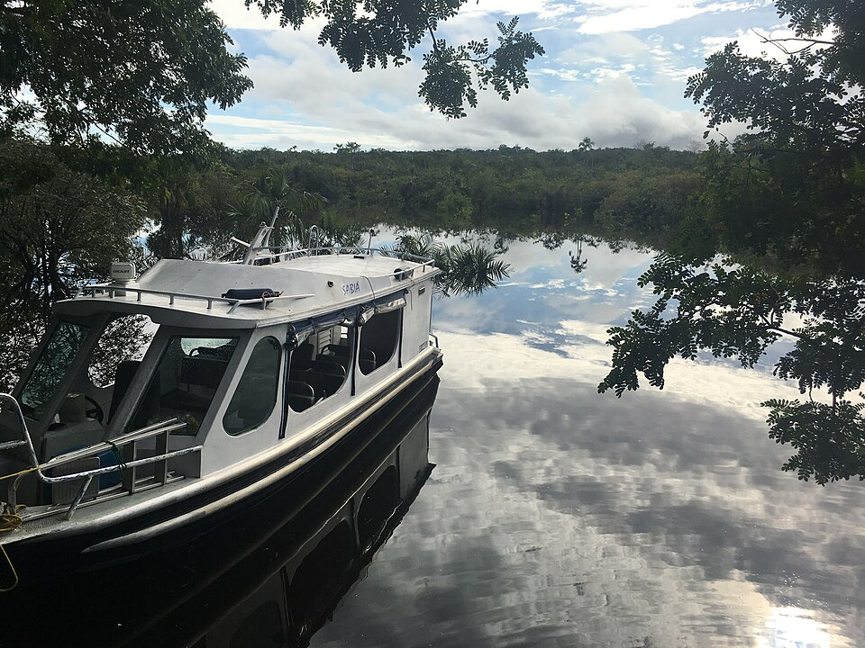
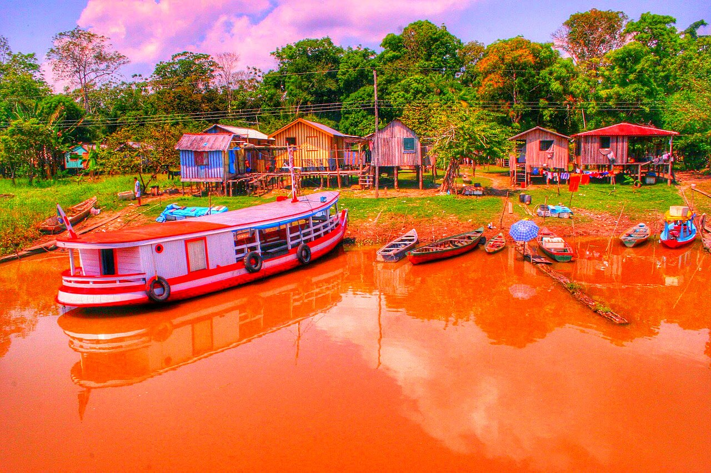
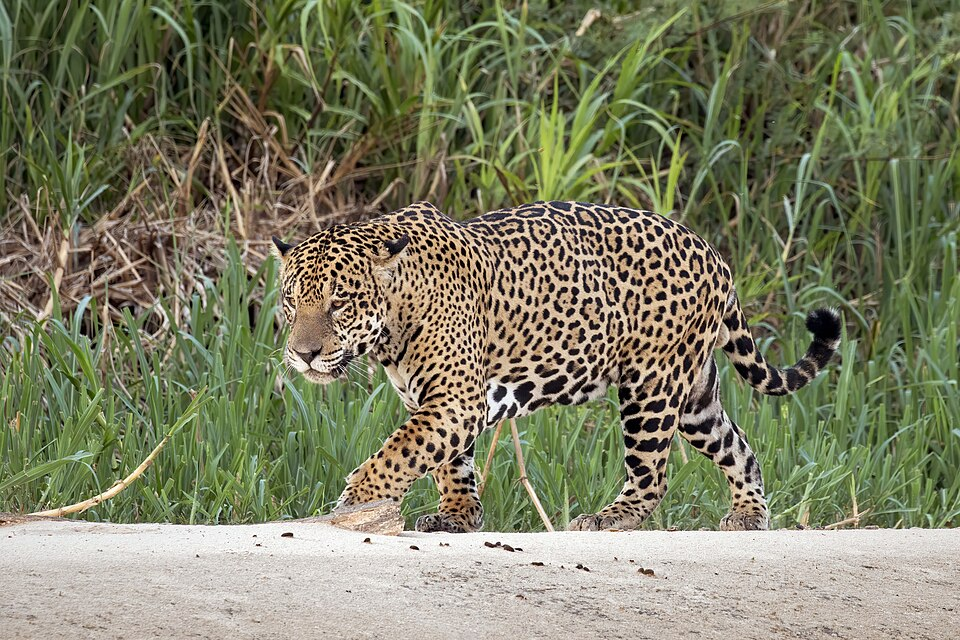
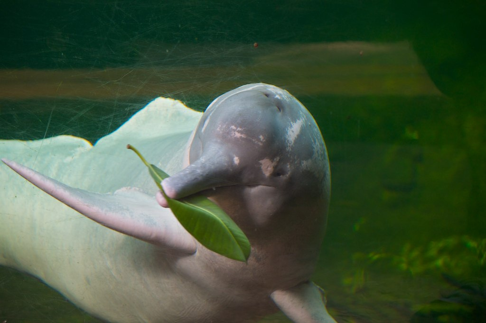
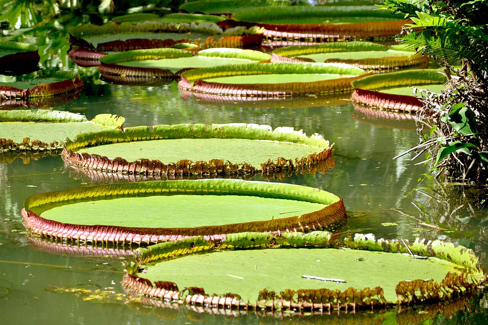
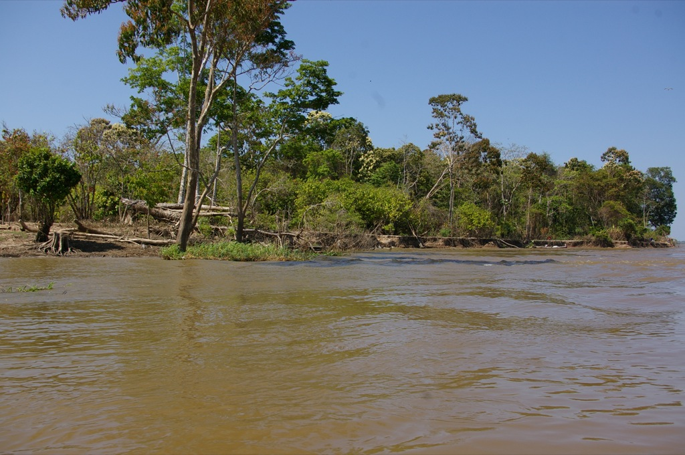
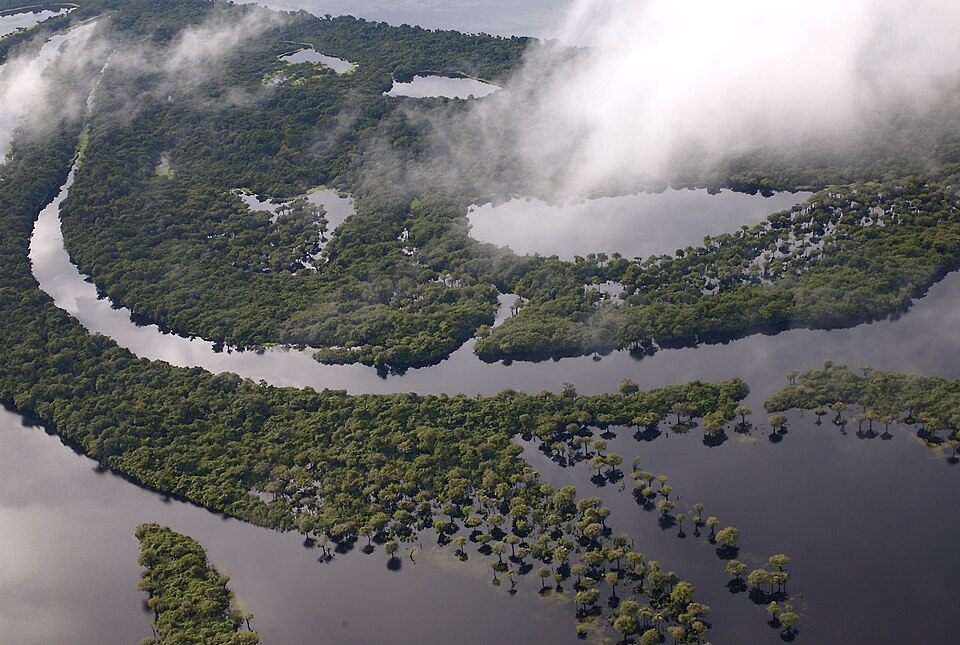

NATUREZA E CONHECIMENTO
Curiosidades da Amazônia
Conheça alguns dos elementos que tornam essa região tão especial.

Uma floresta cheia de vida
Uma floresta cheia de vida
A Amazônia abriga uma enorme diversidade de plantas, animais, fungos e outros organismos. Muitas espécies ainda são estudadas pela ciência.
- É a maior floresta tropical do mundo.
- Abriga cerca de 10% das espécies conhecidas do planeta.
- Novas espécies ainda são descobertas todos os anos.

Rios que conectam a região
Rios que conectam a região
Os rios são importantes para a biodiversidade, o transporte, a alimentação e o cotidiano de muitas comunidades.
- O Rio Amazonas é o maior rio do mundo em volume de água.
- A bacia amazônica tem mais de mil rios afluentes.
- Em muitas cidades, o barco é o principal meio de transporte.

A onça-pintada
A onça-pintada
É o maior felino das Américas e tem papel importante no equilíbrio dos ecossistemas. A preservação de áreas naturais ajuda a proteger a espécie.
- Maior felino das Américas.
- Pode pesar mais de 100 kg.
- É ótima nadadora.

O boto-cor-de-rosa
O boto-cor-de-rosa
Esse mamífero aquático vive em sistemas fluviais da América do Sul e faz parte da biodiversidade dos rios amazônicos.
- Maior golfinho de rio do mundo.
- Usa ecolocalização para caçar.
- Aparece em lendas amazônicas.

A vitória-régia
A vitória-régia
É uma planta aquática conhecida por suas grandes folhas circulares que flutuam na água.
- As folhas podem passar de 2 metros.
- A flor abre à noite.
- A flor muda de cor, de branca para rosa.

Povos e comunidades
Povos e comunidades
A região é lar de povos indígenas e comunidades tradicionais com culturas, línguas e conhecimentos diversos. É importante respeitar suas histórias e seus direitos.
- Vivem na região mais de 180 povos indígenas.
- Ribeirinhos, quilombolas e extrativistas também moram ali.
- Muitas línguas indígenas ainda são faladas.

Importância ambiental
Importância ambiental
A floresta participa dos ciclos da água e do carbono e tem grande importância para o clima e para a vida na região e além dela.
- As árvores liberam vapor que forma os "rios voadores".
- Esses rios voadores levam chuva para outras regiões do Brasil.
- A floresta guarda uma enorme quantidade de carbono.

Povos indígenas da Amazônia
A Amazônia é território de centenas de povos indígenas, cada um com sua própria língua, história e tradições, que guardam conhecimentos valiosos sobre a floresta e merecem respeito.
Foto de demonstração · Crédito: Nome do autor / fonte